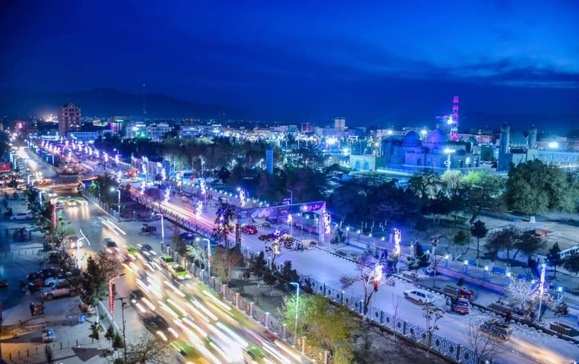

Mazar-i-Sharif, often simply referred to as Mazar, is one of Afghanistan’s most significant cities, located in the northern part of the country. It is the capital of Balkh Province and holds deep cultural, religious, and historical importance, both within Afghanistan and in the broader Central Asian region.
Historical and Religious Significance Mazar-i-Sharif is most famous for being home to the Blue Mosque, or Shrine of Hazrat Ali, one of the holiest sites in Islam. According to Islamic tradition, it is believed to be the burial site of Ali ibn Abi Talib, the cousin and son-in-law of the Prophet Muhammad and the first Imam of Shia Islam. The shrine, with its iconic blue-tiled dome, attracts thousands of pilgrims from across the Muslim world every year, making it an important center for both Sunni and Shia Muslims. The city has thus long been a center of religious significance and spiritual importance in Afghanistan.
Throughout history, Mazar-i-Sharif has served as a major cultural and religious hub for Afghanistan. It has attracted scholars, traders, and pilgrims due to its rich spiritual heritage, particularly during the Timurid and Safavid periods.
Cultural and Political Role Mazar-i-Sharif has been a focal point in the history of Afghanistan, strategically located in the north, close to both Uzbekistan and Turkmenistan. Its location made it a key crossroads for trade, culture, and political influence throughout the centuries.
The city played an essential role during the 20th century, particularly during the Soviet-Afghan War (1979-1989) and the subsequent Afghan Civil War in the 1990s. It was also a key site in the Taliban's rise to power and later in the fight for Afghanistan’s future after the Taliban was overthrown in 2001. Despite the instability, Mazar remained an important political, military, and economic center in northern Afghanistan.
|  |
The Beauty of Mazar Mazar is a city of beauty and vibrance, known for its calm atmosphere and captivating charm. The city is surrounded by vast open spaces and distant mountains, which create a stunning backdrop against the clear blue sky. The air feels light and refreshing, offering a sense of peace and relaxation to anyone who visits. Throughout the year, Mazar embraces the changing seasons with grace. In spring, the land comes alive with colorful flowers and greenery, bringing a sense of renewal and hope. The gentle breezes carry the sweet fragrance of blooming plants, making every moment feel fresh and vibrant. Summer brightens the city with golden sunlight, while autumn brings soft, earthy tones that add warmth to its natural beauty. In winter, Mazar’s calm streets and landscapes take on a quiet stillness as snow blankets the surroundings, offering a peaceful and serene atmosphere. The beauty of Mazar is also reflected in its people, who are known for their kindness and hospitality. Life in the city flows at a balanced rhythm, filled with a mixture of simplicity and liveliness. |